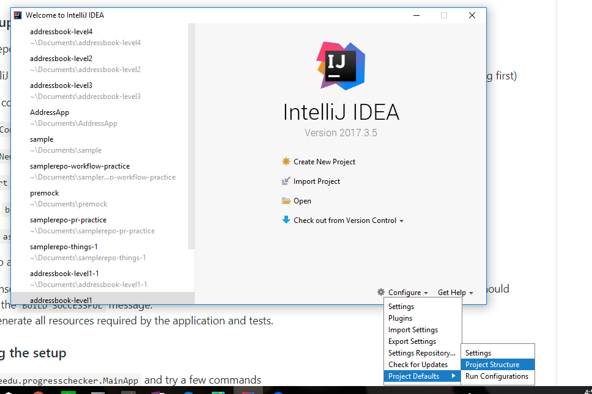
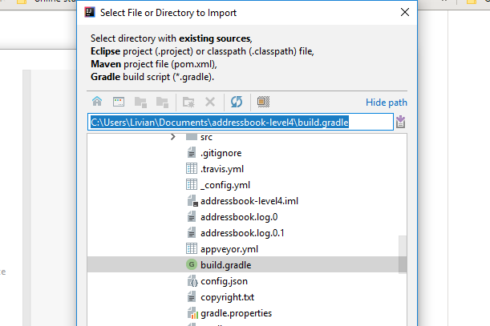
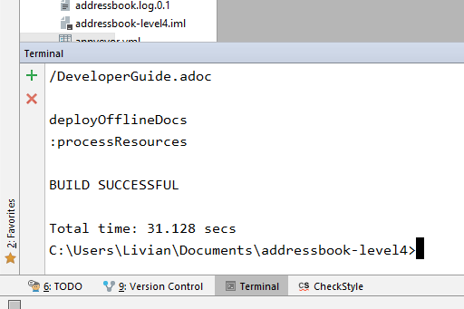

By: Team T09-B3 Since: Feb 2018 Licence: MIT
- 1. Introduction
- 2. Setting up
- 3. Design
- 4. Implementation
- 5. Documentation
- 6. Testing
- 7. Dev Ops
- Appendix A: Suggested Programming Tasks to Get Started
- Appendix B: Product Scope
- Appendix C: User Stories
- Appendix D: Use Cases
- Appendix E: Non Functional Requirements
- Appendix F: Glossary
- Appendix G: Instructions for Manual Testing
1. Introduction
ProgressChecker is for students who prefer to use a desktop app to keep track of their learning progress throughout the certain module. (Current version is available for CS2103/T)
For the current version, you can add your teammates details into ProgressChecker. You can also create a new task list through google task. By default, app will display all the Learning Outcomes for this week in the task list. Students can use this task list to track their weekly homework and the progress of the project.
More importantly, ProgressChecker is optimized for students who prefer to work with a Command Line Interface (CLI) while still having the benefits of a Graphical User Interface (GUI).
If you can type fast, ProgressChecker can get your learning outcome tasks done faster than traditional GUI apps.
Now you are ready to jump to the Setting up to get started. Enjoy!
2. Setting up
There are some things you will need to set up before getting started in contributing to ProgressChecker. Below lists the important key elements you will have to configure.
2.1. Prerequisites
-
JDK
1.8.0_60or laterHaving any Java 8 version is not enough.
This app will not work with earlier versions of Java 8. -
IntelliJ IDE
IntelliJ by default has Gradle and JavaFx plugins installed.
Do not disable them. If you have disabled them, go toFile>Settings>Pluginsto re-enable them.
2.2. Setting up the project in your computer
-
Open IntelliJ (if you are not in the welcome screen, click
File>Close Projectto close the existing project dialog first) -
Set up the correct JDK version for Gradle
-
Click
Configure>Project Defaults>Project Structure
step 3.i -
Click
New…and find the directory of the JDK
-
-
Click
Import Project -
Locate the
build.gradlefile and select it. ClickOK

step 5 -
Click
Open as Project -
Click
OKto accept the default settings -
Open a console and run the command
gradlew processResources(Mac/Linux:./gradlew processResources). It should finish with theBUILD SUCCESSFULmessage.
This will generate all resources required by the application and tests. 
step 8
2.3. Verifying the setup
-
Run the
gradlew.bat runand try a few commands -
Run the tests to ensure they all pass.
2.4. Configurations to do before writing code
2.4.1. Configuring the coding style
This project follows oss-generic coding standards. IntelliJ’s default style is mostly compliant with ours but it uses a different import order from ours. To rectify,
-
Go to
File>Settings…(Windows/Linux), orIntelliJ IDEA>Preferences…(macOS) -
Select
Editor>Code Style>Java -
Click on the
Importstab to set the order-
For
Class count to use import with '*'andNames count to use static import with '*': Set to999to prevent IntelliJ from contracting the import statements -
For
Import Layout: The order isimport static all other imports,import java.*,import javax.*,import org.*,import com.*,import all other imports. Add a<blank line>between eachimport
-
Optionally, you can follow the UsingCheckstyle.adoc document to configure Intellij to check style-compliance as you write code.
2.4.2. Updating documentation to match your fork
After forking the repo, links in the documentation will still point to the CS2103JAN2018-T09-B3/main repo. If you plan to develop this as a separate product (i.e. instead of contributing to the CS2103JAN2018-T09-B3/main) , you should replace the URL in the variable repoURL in DeveloperGuide.adoc and UserGuide.adoc with the URL of your fork.
2.4.3. Setting up CI
Set up Travis to perform Continuous Integration (CI) for your fork. See UsingTravis.adoc to learn how to set it up.
After setting up Travis, you can optionally set up coverage reporting for your team fork (see UsingCoveralls.adoc).
| Coverage reporting could be useful for a team repository that hosts the final version but it is not that useful for your personal fork. |
Optionally, you can set up AppVeyor as a second CI (see UsingAppVeyor.adoc).
| Having both Travis and AppVeyor ensures your App works on both Unix-based platforms and Windows-based platforms (Travis is Unix-based and AppVeyor is Windows-based) |
2.4.4. Getting started with coding
Now you are ready to start coding! You can:
-
Get some sense of the overall design by reading Design Architecture.
-
Take a look at Appendix A, Suggested Programming Tasks to Get Started.
3. Design
ProgressChecker consists of multiple components that work together via an event-driven structure. This section will break down the various components in details to help you jump straight into understanding the architecture in depth.
3.1. Architecture
The Architecture Diagram given below explains the high-level design of the App. Given below is a quick overview of each component.

The .pptx files used to create diagrams in this document can be found in the diagrams folder. To update a diagram, modify the diagram in the pptx file, select the objects of the diagram, and choose Save as picture.
|
Main has only one class called MainApp. It is responsible for:
-
Initializing the components in the correct sequence, and connects them up with each other at app launch.
-
Shutting down the components and invokes cleanup method where necessary.
Commons represents a collection of classes used by multiple other components. Two of those classes play important roles at the architecture level.
-
EventsCenter: This class (written using Google’s Event Bus library) is used by components to communicate with other components using events (i.e. a form of Event Driven design) -
LogsCenter: Used by many classes to write log messages to the App’s log file.
The rest of the App consists of four components.
Each of the four components
-
Defines its API in an
interfacewith the same name as the Component. -
Exposes its functionality using a
{Component Name}Managerclass.
For example, the Logic component (see the class diagram given below) defines it’s API in the Logic.java interface and exposes its functionality using the LogicManager.java class.
Events-Driven nature of the design
The Sequence Diagram below shows how the components interact for the scenario where the user issues the command delete 1.

delete 1 command (part 1)
Note how the Model simply raises a ProgressCheckerChangedEvent when the Address Book data are changed, instead of asking the Storage to save the updates to the hard disk.
|
The diagram below shows how the EventsCenter reacts to that event, which eventually results in the updates being saved to the hard disk and the status bar of the UI being updated to reflect the 'Last Updated' time.

delete 1 command (part 2)
Note how the event is propagated through the EventsCenter to the Storage and UI without Model having to be coupled to either of them. This is an example of how this Event Driven approach helps us reduce direct coupling between components.
|
The sections below give more details of each component.
3.2. UI component

API : Ui.java
The UI consists of a MainWindow that is made up of parts e.g.CommandBox, ResultDisplay, PersonListPanel, StatusBarFooter, BrowserPanel etc. All these, including the MainWindow, inherit from the abstract UiPart class.
The UI component uses JavaFx UI framework. The layout of these UI parts are defined in matching .fxml files that are in the src/main/resources/view folder. For example, the layout of the MainWindow is specified in MainWindow.fxml
The UI component,
-
Executes user commands using the
Logiccomponent. -
Binds itself to some data in the
Modelso that the UI can auto-update when data in theModelchange. -
Responds to events raised from various parts of the App and updates the UI accordingly.
3.3. Logic component

XYZCommand and Command in Figure 6, “Structure of the Logic Component”API :
Logic.java
-
Logicuses theProgressCheckerParserclass to parse the user command. -
This results in a
Commandobject which is executed by theLogicManager. -
The command execution can affect the
Model(e.g. adding a teammate) and/or raise events. -
The result of the command execution is encapsulated as a
CommandResultobject which is passed back to theUi.
Given below is the Sequence Diagram for interactions within the Logic component for the execute("delete 1") API call.

delete 1 Command3.4. Model component

API : Model.java
The Model,
-
stores a
UserPrefobject that represents the user’s preferences. -
stores the Address Book data.
-
exposes an unmodifiable
ObservableList<Person>that can be 'observed' e.g. the UI can be bound to this list so that the UI automatically updates when the data in the list change. -
does not depend on any of the other three components.
3.5. Storage component

API : Storage.java
The Storage component,
-
can save
UserPrefobjects in json format and read it back. -
can save the Address Book data in xml format and read it back.
3.6. Common classes
Classes used by multiple components are in the seedu.progresschecker.commons package.
4. Implementation
This section describes some noteworthy details on how certain features are implemented.
4.1. Undo/Redo feature
4.1.1. Current Implementation
The undo/redo mechanism is facilitated by an UndoRedoStack, which resides inside LogicManager. It supports undoing and redoing of commands that modifies the state of the ProgressChecker (e.g. add, edit). Such commands will inherit from UndoableCommand.
UndoRedoStack only deals with UndoableCommands. Commands that cannot be undone will inherit from Command instead. The following diagram shows the inheritance diagram for commands:
As you can see from the diagram, UndoableCommand adds an extra layer between the abstract Command class and concrete commands that can be undone, such as the DeleteCommand. Note that extra tasks need to be done when executing a command in an undoable way, such as saving the state of the ProgressChecker before execution. UndoableCommand contains the high-level algorithm for those extra tasks while the child classes implements the details of how to execute the specific command. Note that this technique of putting the high-level algorithm in the parent class and lower-level steps of the algorithm in child classes is also known as the template pattern.
Commands that are not undoable are implemented this way:
public class ListCommand extends Command {
@Override
public CommandResult execute() {
// ... list logic ...
}
}With the extra layer, the commands that are undoable are implemented this way:
public abstract class UndoableCommand extends Command {
@Override
public CommandResult execute() {
// ... undo logic ...
executeUndoableCommand();
}
}
public class DeleteCommand extends UndoableCommand {
@Override
public CommandResult executeUndoableCommand() {
// ... delete logic ...
}
}Suppose that the user has just launched the application. The UndoRedoStack will be empty at the beginning.
The user executes a new UndoableCommand, delete 5, to delete the 5th teammate in the ProgressChecker. The current state of the ProgressChecker is saved before the delete 5 command executes. The delete 5 command will then be pushed onto the undoStack (the current state is saved together with the command).

As the user continues to use the program, more commands are added into the undoStack. For example, the user may execute add n/David … to add a new teammate.

add
If a command fails its execution, it will not be pushed to the UndoRedoStack at all.
|
The user now decides that adding the teammate was a mistake, and decides to undo that action using undo.
We will pop the most recent command out of the undoStack and push it back to the redoStack. We will restore the ProgressChecker to the state before the add command executed.

undo
If the undoStack is empty, then there are no other commands left to be undone, and an Exception will be thrown when popping the undoStack.
|
The following sequence diagram shows how the undo operation works:

The redo does the exact opposite (pops from redoStack, push to undoStack, and restores the ProgressChecker to the state after the command is executed).
If the redoStack is empty, then there are no other commands left to be redone, and an Exception will be thrown when popping the redoStack.
|
The user now decides to execute a new command, clear. As before, clear will be pushed into the undoStack. This time the redoStack is no longer empty. It will be purged as it no longer make sense to redo the add n/David command (this is the behavior that most modern desktop applications follow).

clearCommands that are not undoable are not added into the undoStack. For example, list, which inherits from Command rather than UndoableCommand, will not be added after execution:

listThe following activity diagram summarize what happens inside the UndoRedoStack when a user executes a new command:

4.1.2. Design Considerations
Aspect: Implementation of UndoableCommand
| Alternative | Pros | Cons |
|---|---|---|
Add a new abstract method |
We will not lose any undone/redone functionality as it is now part of the default behaviour. Classes that deal with |
Hard for new developers to understand the template pattern. |
Override |
Does not involve the template pattern, easier for new developers to understand. |
Cons: Classes that inherit from |
Aspect: How undo & redo executes
Alternative |
Pros |
Cons |
Save the entire ProgressChecker |
Easy to implement. |
May have performance issues in terms of memory usage. |
Individual command knows how to undo/redo by itself |
Will use less memory (e.g. for |
We must ensure that the implementation of each individual command are correct. |
Aspect: Type of commands that can be undone/redone
Alternative |
Pros |
Cons |
Only include commands that modifies the ProgressChecker ( |
We only revert changes that are hard to change back (the view can easily be re-modified as no data are * lost). |
User might think that undo also applies when the list is modified (undoing filtering for example), * only to realize that it does not do that, after executing |
Include all commands |
Might be more intuitive for the user. |
User have no way of skipping such commands if he or she just want to reset the state of the ProgressChecker and not the view. |
| Additional Info: See our discussion here. |
Aspect: Data structure to support the undo/redo commands
| Alternative | Pros | Cons |
|---|---|---|
Use separate stack for undo and redo |
Easy to understand for new Computer Science student undergraduates to understand, who are likely to be * the new incoming developers of our project. |
Logic is duplicated twice. For example, when a new command is executed, we must remember to update * both |
Use |
We do not need to maintain a separate stack, and just reuse what is already in the codebase. |
Cons: Requires dealing with commands that have already been undone: We must remember to skip these commands. Violates Single Responsibility Principle and Separation of Concerns as |
4.2. Upload feature
4.2.1. Planned Implementation
The Upload command will allow users to upload their preferred image to replace the default profile photo.
The valid photo to be upload will be copies from local path inside resources folder under /images/contact. The name of the file will be renamed according to the time that the photo is uploaded.
Upload can be undoable. The diagram below shows how the EventsCenter reacts to uploadPhoto event.
uploadPhoto Command
UploadCommand is implemented this way:
public class UploadCommand extends UndoableCommand {
@Override
public CommandResult executeUndoableCommand() throws CommandException {
requireNonNull(personToUpdate);
try {
model.addPhoto(photoPath);
model.uploadPhoto(personToUpdate, savePath);
return new CommandResult(MESSAGE_SUCCESS);
} catch (PersonNotFoundException pnfe) {
throw new AssertionError("The target person cannot be missing");
} catch (DuplicatePhotoException e) {
throw new CommandException(MESSAGE_IMAGE_DUPLICATE);
} catch (DuplicatePersonException e) {
throw new CommandException(MESSAGE_IMAGE_DUPLICATE);
}
}
}| Users are allowed to reload the image if they want to update the profile photo. |
Here is the code to copy the photo from local path inside resources folder.
public String copyLocalPhoto(String localPath) throws IOException {
File localFile = new File(localPath);
String newPath = createSavePath(localPath);
if (!localFile.exists()) {
throw new FileNotFoundException(MESSAGE_LOCAL_PATH_CONSTRAINTS);
}
createSavedPhoto(newPath);
try {
copyFile(localPath, newPath);
} catch (IOException e) {
throw new IOException(MESSAGE_COPY_FAIL);
}
return newPath;
}| If the local path is invalid or the image cannot be found, the upload will not be successful. The extension of the file can only be 'jpg', 'jpeg' or 'png'. User will be asked to write the correct path to image again. |
4.2.2. Design Considerations
Aspect: Implementation of UploadCommand
| Alternative | Pros | Cons |
|---|---|---|
User will provide the path of image |
The path can be used directly to find the image and display it in the app. |
Image may be a local file. When other users open the app, they cannot see the update. |
User will upload image into our github folder manually |
Everyone can see the update of profile photo. |
Quite trobulesome to upload photo manually first. |
4.3. Dynamic Search Implementation
4.3.1. Current Implementation
The find command shows the searched contact currently. However, the user does not need to type the complete name press enter, the whole search is dynamic. As soon as the user types the command find dynamic search state is toggled. After typing find command, whichever character is entered by the user, the results which contain
the typed keywords appear.
The following diagram shows the UML diagram for find command :

find CommandTo implement the dynamic search, we used the following method - as soon as the user enters any character in the command box, the text is retrieved from
the command box and checked if it is the find command. If it is the find command, dynamic search is started. After the find command is detected in the
command box, every key that is pressed is parsed and sent to the find command parser. After that the basic functionality of find is used and the results are displayed.
The code snippet for the implementation is:
private void handleKeyPress(KeyEvent keyEvent) {
switch (keyEvent.getCode()) {
// .. other keypress logic ..
default:
try {
if (// .. checking if the text is `find` command) {
isCorrectCommandWord = !commandTextField.getText().trim().isEmpty();
CommandResult commandResult;
if (keyEvent.getCode() != KeyCode.BACK_SPACE && keyEvent.getCode() != KeyCode.DELETE) {
commandResult = logic.execute(commandTextField.getText() + keyEvent.getText());
} else {
commandResult = logic.execute(commandTextField.getText().substring(0,
commandTextField.getText().length() - 1));
}
// process result of the command
logger.info("Result: " + commandResult.feedbackToUser);
raise(new NewResultAvailableEvent(commandResult.feedbackToUser));
}
} catch (CommandException | ParseException e) {
// .. command failure logic ..
}
}
}
The entered key is not instantly updated in the command box thats why after the commandTextField.getText() is executed we need to append\delete a character for the
code to the result to process the right input - the one that the user can see on their screens.
|
4.3.2. Design consideration
Aspect: User Interface (UI)
| Alternative | Pros | Cons |
|---|---|---|
Show the search results without actually highlighting the keywords |
Allows more readability of the of the results as they contain multiple fields and not just user name. |
User needs to manually search for the keywords entered by him in the search results. |
Show the search results WITH highlighting the keywords in the searched name |
It will make it easier for the user to view the user to identify the searched keyword in the displayed results. |
Adding highlights to the results might make the displayed results a bit too cluttered specially with the presence of tags which are colored as well. |
4.4. [Planned] Answering an exercise
4.4.1. Planned Implementation
The exercises for all weeks would be stored as a local file upon which it would be loaded by the StorageManager on start up.
The Sequence Diagram below shows how the components interact for the scenario where the user issues the command answer 2.1.1 a d.
answer 2.1.1 a d command (part 1)
Note how the Model simply raises a ExercisesChangedEvent when the exercises data are changed, instead of asking the Storage to save the updates to the hard disk.
|
The diagram below shows how the EventsCenter reacts to that event, which eventually results in the updates being saved to the hard disk and the exercises display of the UI being updated to reflect the newly given answers.
answer 2.1.1 a d command (part 2)
4.4.2. Design Considerations
Aspect: Implementation of AnswerCommand
-
Add a new command that extends
Command
Aspect: Format of answer command
| Alternative | Pros | Cons |
|---|---|---|
Use same command formatting |
Less parser files to manage altogether. |
Can be unintuitive for users when it comes to answer different question with the same formatting. |
Use different command based on the type of question (e.g. |
Can be clearer on what is being answered for the user. |
More commands and formatting to learn and remember. |
Aspect: How answering executes
-
Trigger an event change in
Logicto signalUIfor a change in text display inExercisesPanel -
Process checking of correctness in
Model -
Save data to local file in
Storage
Aspect: Storing of exercise questions
| Alternative | Pros | Cons |
|---|---|---|
Load from a local file |
Implementation becomes a lot more modular. |
Have to implement extra text file parser and involves |
Include in |
Easier to see where everything is. |
Formatting the exercises becomes harder and the implementation is less modular. |
4.5. [Ongoing] add default task command (Google Tasks API relevant commands)
4.5.1. Current+Planned Implementation
The default LOs and todos for all weeks would be stored as a local file upon which it would be loaded by the StorageManager on start up.
The Sequence Diagram below shows how the components interact for the scenario where the user issues the command newtasklist.
newtasklist Command
| This command has no parameter regarding user input. The arguments passed are pre-initialized constant variables stored in the AddDefaultTasksCommand Class itself. |
We apply Google Tasks API to help us save user tasks data online (there will be cases where data of teammates are needed, thus only local data is not enough). To use Google Tasks API, we fist need to register this project on google developer console and retrieve a client credential file (client_id.json) to authorize our project. Then, add corresponding dependencies to build.gradle, the JAR files will be downloaded automatically upon project rebuild.
Here is the code snippet to add dependencies:
compile (
['com.google.api-client:google-api-client:1.23.0'],
['com.google.apis:google-api-services-tasks:v1-rev49-1.23.0'],
['com.google.oauth-client:google-oauth-client-jetty:1.23.0'],
)| Simply downloading JAR files without editing gradle is not suggested. JARs are not in git thus our co-developers will rely on the dependencies to retrieve the libraries. |
We write a program to authorize our project (by loading the aforementioned client credential file), trigger user loggin and build service. Note that when users are using ProgressChecker, only the first google task command requires them to log in with their google accounts, later other commands that use google tasks api will not trigger user login again. Also, very important, we import the APIs at the beginning of the program.
Google Tasks API helps us save time building massive data structures (ie. Tasks, TaskLists, Lists of TaskLists, with many methods and exceptions). However, we do have a few classes in the modeling part that further add customized methods which are useful for current commands and even future commands. In this way, we avoid repetition of code snippet and having big chunks of import statements in numerous commands.
Here is a code snippet that can find a task list by its title (while the native method only finds task by its id which is not memorable):
/**
* Finds the task list with title {@code String} from the current list of task lists
*
* @param listTitle title of the task list we look for
* @return the task list instance
*/
public static TaskList searchTaskList(String listTitle) throws CommandException {
TaskList taskList = null;
ConnectTasksApi connection = new ConnectTasksApi();
try {
connection.authorize();
} catch (Exception e) {
throw new CommandException(AUTHORIZE_FAILURE);
}
Tasks service = connection.getTasksService();
try {
TaskLists taskLists = service.tasklists().list().execute();
taskList = taskLists.getItems().stream()
.filter(t -> t.getTitle().equals(listTitle))
.findFirst()
.orElse(null);
} catch (IOException ioe) {
throw new CommandException(LOAD_FAILURE);
}
return taskList;
}4.5.2. Design Considerations
Aspect: Implementation of AddDefaultTasksCommand
-
Add a new command that extends
Command. We do not extendUndoableCommandbecause updating google tasks online cannot be handled by the undo command.
Aspect: Format of add default task list command
-
There is only one command word, without any other argument. Therefore, less parser files are needed to manage altogether. This is very simple and easy to type.
Aspect: How the task is added
-
Authorization with client credential file and user login
-
Create a new task list with default given name and push to user’s google account
-
Load the local file that contains all the default LOs and todos, parse it, create tasks one by one and add the the previously created task
4.6. Logging
We are using java.util.logging package for logging. The LogsCenter class is used to manage the logging levels and logging destinations.
-
The logging level can be controlled using the
logLevelsetting in the configuration file (See Section 4.7, “Configuration”) -
The
Loggerfor a class can be obtained usingLogsCenter.getLogger(Class)which will log messages according to the specified logging level -
Currently log messages are output through:
Consoleand to a.logfile.
Logging Levels
-
SEVERE: Critical problem detected which may possibly cause the termination of the application -
WARNING: Can continue, but with caution -
INFO: Information showing the noteworthy actions by the App -
FINE: Details that is not usually noteworthy but may be useful in debugging e.g. print the actual list instead of just its size
4.7. Configuration
Certain properties of the application can be controlled (e.g App name, logging level) through the configuration file (default: config.json).
5. Documentation
We use asciidoc for writing documentation. This section talks about how you can modify and publish the existing documentations.
| We chose asciidoc over Markdown because asciidoc, although a bit more complex than Markdown, provides more flexibility in formatting. |
5.1. Editing Documentation
See UsingGradle.adoc to learn how to render .adoc files locally to preview the end result of your edits.
Alternatively, you can download the AsciiDoc plugin for IntelliJ, which allows you to preview the changes you have made to your .adoc files in real-time.
5.2. Publishing Documentation
See UsingTravis.adoc to learn how to deploy GitHub Pages using Travis.
5.3. Converting Documentation to PDF format
We use Google Chrome for converting documentation to PDF format, as Chrome’s PDF engine preserves hyperlinks used in webpages.
Here are the steps to convert the project documentation files to PDF format.
-
Follow the instructions in UsingGradle.adoc to convert the AsciiDoc files in the
docs/directory to HTML format. -
Go to your generated HTML files in the
build/docsfolder, right click on them and selectOpen with→Google Chrome. -
Within Chrome, click on the
Printoption in Chrome’s menu. -
Set the destination to
Save as PDF, then clickSaveto save a copy of the file in PDF format. For best results, use the settings indicated in the screenshot below.

6. Testing
ProgressChecker uses JUnit tests to check for its correctness. This section covers the type of tests and how to run them.
6.1. Running Tests
There are three ways to run tests.
| The most reliable way to run tests is the 3rd one. The first two methods might fail some GUI tests due to platform/resolution-specific idiosyncrasies. |
Method 1: Using IntelliJ JUnit test runner
-
To run all tests, right-click on the
src/test/javafolder and chooseRun 'All Tests' -
To run a subset of tests, you can right-click on a test package, test class, or a test and choose
Run 'ABC'
Method 2: Using Gradle
-
Open a console and run the command
gradlew clean allTests(Mac/Linux:./gradlew clean allTests)
| See UsingGradle.adoc for more info on how to run tests using Gradle. |
Method 3: Using Gradle (headless)
Thanks to the TestFX library we use, our GUI tests can be run in the headless mode. In the headless mode, GUI tests do not show up on the screen. That means the developer can do other things on the Computer while the tests are running.
To run tests in headless mode, open a console and run the command gradlew clean headless allTests (Mac/Linux: ./gradlew clean headless allTests)
6.2. Types of tests
We have two types of tests:
-
GUI Tests - These are tests involving the GUI. They include,
-
System Tests that test the entire App by simulating user actions on the GUI. These are in the
systemtestspackage. -
Unit tests that test the individual components. These are in
seedu.progresschecker.uipackage.
-
-
Non-GUI Tests - These are tests not involving the GUI. They include,
-
Unit tests targeting the lowest level methods/classes.
e.g.seedu.progresschecker.commons.StringUtilTest -
Integration tests that are checking the integration of multiple code units (those code units are assumed to be working).
e.g.seedu.progresschecker.storage.StorageManagerTest -
Hybrids of unit and integration tests. These test are checking multiple code units as well as how the are connected together.
e.g.seedu.progresschecker.logic.LogicManagerTest
-
6.3. Troubleshooting Testing
Problem: HelpWindowTest fails with a NullPointerException.
-
Reason: One of its dependencies,
UserGuide.htmlinsrc/main/resources/docsis missing. -
Solution: Execute Gradle task
processResources.
7. Dev Ops
7.1. Build Automation
See UsingGradle.adoc to learn how to use Gradle for build automation.
7.2. Continuous Integration
We use Travis CI and AppVeyor to perform Continuous Integration on our projects. See UsingTravis.adoc and UsingAppVeyor.adoc for more details.
7.3. Coverage Reporting
We use Coveralls to track the code coverage of our projects. See UsingCoveralls.adoc for more details.
7.4. Documentation Previews
When a pull request has changes to asciidoc files, you can use Netlify to see a preview of how the HTML version of those asciidoc files will look like when the pull request is merged. See UsingNetlify.adoc for more details.
7.5. Making a Release
Here are the steps to create a new release.
-
Update the version number in
MainApp.java. -
Generate a JAR file using Gradle.
-
Tag the repo with the version number. e.g.
v0.1 -
Create a new release using GitHub and upload the JAR file you created.
7.6. Managing Dependencies
A project often depends on third-party libraries. For example, Address Book depends on the Jackson library for XML parsing. Managing these dependencies can be automated using Gradle. For example, Gradle can download the dependencies automatically, which is better than these alternatives.
a. Include those libraries in the repo (this bloats the repo size)
b. Require developers to download those libraries manually (this creates extra work for developers)
Appendix A: Suggested Programming Tasks to Get Started
It might be your first time working with a large code base. If so, here is a suggested path for new programmers to kick start your first functionality:
-
First, add small local-impact (i.e. the impact of the change does not go beyond the component) enhancements to one component at a time. Some suggestions are given in Section A.1, “Improving each component”.
-
Next, add a feature that touches multiple components to learn how to implement an end-to-end feature across all components. Section A.2, “Creating a new command:
remark” explains how to go about adding such a feature.
A.1. Improving each component
Each individual exercise in this section is component-based (i.e. you would not need to modify the other components to get it to work).
Logic component
Scenario: You are in charge of logic. During dog-fooding, your team realize that it is troublesome for the user to type the whole command in order to execute a command. Your team devise some strategies to help cut down the amount of typing necessary, and one of the suggestions was to implement aliases for the command words. Your job is to implement such aliases.
Do take a look at Section 3.3, “Logic component” before attempting to modify the Logic component.
|
-
Add a shorthand equivalent alias for each of the individual commands. For example, besides typing
clear, the user can also typecto remove teammates in the list.
Model component
Scenario: You are in charge of model. One day, the logic-in-charge approaches you for help. He wants to implement a command such that the user is able to remove a particular tag from everyone in the ProgressChecker, but the model API does not support such a functionality at the moment. Your job is to implement an API method, so that your teammate can use your API to implement his command.
Do take a look at Section 3.4, “Model component” before attempting to modify the Model component.
|
-
Add a
removeTag(Tag)method. The specified tag will be removed from everyone in the ProgressChecker.
Ui component
Scenario: You are in charge of ui. During a beta testing session, your team is observing how the users use your ProgressChecker application. You realize that one of the users occasionally tries to delete non-existent tags from a contact, because the tags all look the same visually, and the user got confused. Another user made a typing mistake in his command, but did not realize he had done so because the error message wasn’t prominent enough. A third user keeps scrolling down the list, because he keeps forgetting the index of the last teammate in the list. Your job is to implement improvements to the UI to solve all these problems.
Do take a look at Section 3.2, “UI component” before attempting to modify the UI component.
|
-
Use different colors for different tags inside teammate cards. For example,
friendstags can be all in brown, andcolleaguestags can be all in yellow.Before

After

-
Modify
NewResultAvailableEventsuch thatResultDisplaycan show a different style on error (currently it shows the same regardless of errors).Before

After

-
Modify the
StatusBarFooterto show the total number of people in the ProgressChecker.Before

After

Storage component
Scenario: You are in charge of storage. For your next project milestone, your team plans to implement a new feature of saving the ProgressChecker to the cloud. However, the current implementation of the application constantly saves the ProgressChecker after the execution of each command, which is not ideal if the user is working on limited internet connection. Your team decided that the application should instead save the changes to a temporary local backup file first, and only upload to the cloud after the user closes the application. Your job is to implement a backup API for the ProgressChecker storage.
Do take a look at Section 3.5, “Storage component” before attempting to modify the Storage component.
|
-
Add a new method
backupProgressChecker(ReadOnlyProgressChecker), so that the ProgressChecker can be saved in a fixed temporary location.
A.2. Creating a new command: remark
By creating this command, you will get a chance to learn how to implement a feature end-to-end, touching all major components of the app.
Scenario: You are a software maintainer for progresschecker, as the former developer team has moved on to new projects. The current users of your application have a list of new feature requests that they hope the software will eventually have. The most popular request is to allow adding additional comments/notes about a particular contact, by providing a flexible remark field for each contact, rather than relying on tags alone. After designing the specification for the remark command, you are convinced that this feature is worth implementing. Your job is to implement the remark command.
A.2.1. Description
Edits the remark for a teammate specified in the INDEX.
Format: remark INDEX r/[REMARK]
Examples:
-
remark 1 r/Likes to drink coffee.
Edits the remark for the first teammate toLikes to drink coffee. -
remark 1 r/
Removes the remark for the first teammate.
A.2.2. Step-by-step Instructions
[Step 1] Logic: Teach the app to accept 'remark' which does nothing
Let’s start by teaching the application how to parse a remark command. We will add the logic of remark later.
Main:
-
Add a
RemarkCommandthat extendsUndoableCommand. Upon execution, it should just throw anException. -
Modify
ProgressCheckerParserto accept aRemarkCommand.
Tests:
-
Add
RemarkCommandTestthat tests thatexecuteUndoableCommand()throws an Exception. -
Add new test method to
ProgressCheckerParserTest, which tests that typing "remark" returns an instance ofRemarkCommand.
[Step 2] Logic: Teach the app to accept 'remark' arguments
Let’s teach the application to parse arguments that our remark command will accept. E.g. 1 r/Likes to drink coffee.
Main:
-
Modify
RemarkCommandto take in anIndexandStringand print those two parameters as the error message. -
Add
RemarkCommandParserthat knows how to parse two arguments, one index and one with prefix 'r/'. -
Modify
ProgressCheckerParserto use the newly implementedRemarkCommandParser.
Tests:
-
Modify
RemarkCommandTestto test theRemarkCommand#equals()method. -
Add
RemarkCommandParserTestthat tests different boundary values forRemarkCommandParser. -
Modify
ProgressCheckerParserTestto test that the correct command is generated according to the user input.
[Step 3] Ui: Add a placeholder for remark in PersonCard
Let’s add a placeholder on all our PersonCard s to display a remark for each person later.
Main:
-
Add a
Labelwith any random text insidePersonListCard.fxml. -
Add FXML annotation in
PersonCardto tie the variable to the actual label.
Tests:
-
Modify
PersonCardHandleso that future tests can read the contents of the remark label.
[Step 4] Model: Add Remark class
We have to properly encapsulate the remark in our Person class. Instead of just using a String, let’s follow the conventional class structure that the codebase already uses by adding a Remark class.
Main:
-
Add
Remarkto model component (you can copy fromAddress, remove the regex and change the names accordingly). -
Modify
RemarkCommandto now take in aRemarkinstead of aString.
Tests:
-
Add test for
Remark, to test theRemark#equals()method.
[Step 5] Model: Modify Person to support a Remark field
Now we have the Remark class, we need to actually use it inside Person.
Main:
-
Add
getRemark()inPerson. -
You may assume that the user will not be able to use the
addandeditcommands to modify the remarks field (i.e. the person will be created without a remark). -
Modify
SampleDataUtilto add remarks for the sample data (delete yourprogressChecker.xmlso that the application will load the sample data when you launch it.)
[Step 6] Storage: Add Remark field to XmlAdaptedPerson class
We now have Remark s for Person s, but they will be gone when we exit the application. Let’s modify XmlAdaptedPerson to include a Remark field so that it will be saved.
Main:
-
Add a new Xml field for
Remark.
Tests:
-
Fix
invalidAndValidPersonProgressChecker.xml,typicalPersonsProgressChecker.xml,validProgressChecker.xmletc., such that the XML tests will not fail due to a missing<remark>element.
[Step 6b] Test: Add withRemark() for PersonBuilder
Since Person can now have a Remark, we should add a helper method to PersonBuilder, so that users are able to create remarks when building a Person.
Tests:
-
Add a new method
withRemark()forPersonBuilder. This method will create a newRemarkfor the person that it is currently building. -
Try and use the method on any sample
usinTypicalPersons.
[Step 7] Ui: Connect Remark field to PersonCard
Our remark label in PersonCard is still a placeholder. Let’s bring it to life by binding it with the actual remark field.
Main:
-
Modify
PersonCard's constructor to bind theRemarkfield to thePerson's remark.
Tests:
-
Modify
GuiTestAssert#assertCardDisplaysPerson(…)so that it will compare the now-functioning remark label.
[Step 8] Logic: Implement RemarkCommand#execute() logic
We now have everything set up… but we still can’t modify the remarks. Let’s finish it up by adding in actual logic for our remark command.
Main:
-
Replace the logic in
RemarkCommand#execute()(that currently just throws anException), with the actual logic to modify the remarks of a teammate.
Tests:
-
Update
RemarkCommandTestto test that theexecute()logic works.
A.2.3. Full Solution
See this PR for the step-by-step solution.
Appendix B: Product Scope
This section covers what ProgressChecker is meant to be and what it can do for the users. Your name and feature contribution will be listed here.
Target user profile:
-
is taking CS2103/CS2103T in NUS
-
wants to keep track on his/her learning progress
-
is willing to have good team management
-
has a need to manage a up to 4 contacts
-
prefers desktop apps over other types
-
can type fast
-
prefers typing over mouse input
-
is reasonably comfortable using CLI apps
Value proposition:
-
never miss LOs hidden in the nested collapsible list
-
keep track of your own progress on a week by week basis
-
keep track of your teammates' completion of TO-DO list(at most 20 tasks per day) and learning progress (providing proof for peer evaluation)
-
view the teammates' weekly plan in phase B (to know the upcoming updates even before they send any pull requests to github repo)
-
manage issues from github straight from the software along with other tracking
-
save your answers(no more than 100 words) for the exercises (as proof of completion and for future revision)
-
easily search for information based on key words (which is hard to achieve in the module website with nested collapsible lists)
Feature Contribution:
Koh Yee Ru:
-
(Minor) Week based window view: students are able to navigate and view content arranged in a weekly basis. (acts as a base for incorporation of API)
-
(Minor) Changing color themes: students will be able to change between a dark and light theme like the norm for editors which programmers are used to.
-
(Major) Exercises: students will be able to view, answer and save their responses for the weekly exercises to help track their conceptual understanding. Choice based questions will automatically be check for correctness with corresponding feedback to students.
Kang Anmin:
-
(Minor) Change/Add more fields of information for teammates in the contact list, in order to fit the specific context of this software. It also lays a foundation for other operations.
-
(Major) LO management: Add LOs to google tasks (the users google account, load tasks and sign completion.
Lai Liwen:
-
(Minor) HighLight the key word: the key word will be highlighted in command find
-
(Major) Revamp the UI: rearrange the different sections and panels to best suit audience’s needs
-
(Major) Upload profile photo: students will be able to upload a photo to their profile
Aditya Agarwal:
-
(Minor) Implement dynamic search
-
(Minor) Add an auto-complete for commands with tab press
-
(Major) Add a progress checker which will keep a track of number of tasks remaining and accordingly update the progress bar
Appendix C: User Stories
This section lists the actions that both new and long-time users can and may want to perform with ProgressChecker.
Priorities: High (must have) - * * *, Medium (nice to have) - * *, Low (unlikely to have) - *
| Priority | As a … | I want to … | So that I can… |
|---|---|---|---|
|
new user |
see usage instructions |
refer to instructions when I forget how to use the App |
|
new user |
fill in my details such as name, email, 8 digits phone number |
provide necessary information for platform maintenance |
|
new user |
fill in optional fields such as faculty, year of study, etc. |
help my teammates know me better |
|
user |
update information of certain field(s) |
keep my information up-to-date |
|
user |
add a teammate’s details |
help myself to track my current teammates' progress |
|
user |
delete a teammate |
remove an entry of a teammate that I’m no longer grouped with |
|
new user |
upload a photo for myself or my teammates |
help me to recognize my teammates |
|
new user |
load a photo of myself or my teammates from github |
help me to recognize my teammates |
|
user |
search information in our module website based on keywords |
navigate and reference the information I need quickly |
|
user |
view my to-do learning outcomes |
know all the weekly deliverables and not miss them out |
|
user |
mark a to-do learning outcome as completed |
focus on the tasks I have not done |
|
user |
answer and save my responses for the weekly exercises |
show to tutor as proof of my learning outcome and revise before exams |
|
user |
know if my answer for an exercise is correct |
learn from any mistakes I made |
|
user |
see the list of completed/incomplete learning outcomes of my teammates |
help to remind my teammate of the task or know which task to offer help with if they are having difficulties |
|
user |
list issues (tasks) on GitHub |
easily inform my teammates of my upcoming plans even before I send any pull requests to the team’s repository |
|
user |
assign issues (tasks) to my teammates |
track who is doing what |
|
user |
see the issues (tasks) listed on GitHub |
easily know the upcoming plans of my teammates even before they send any pull requests to the team’s repository |
|
user |
close issues (tasks) on GitHub |
easily inform my teammates of a completed task if no particular pull requests closes it |
|
user |
see the timeline showing the learning progress of me and my teammates |
make sure everyone is on track |
|
user |
hide private contact details by default |
minimize chance of someone else seeing them by accident |
|
user with many teammates in the ProgressChecker |
sort teammates by name |
locate a teammate easily |
Appendix D: Use Cases
This section list the sequence of events for a feature. It includes possible scenarios in which a feature is not interacted with as intended which you can defense against.
(For all use cases below, the System is the ProgressChecker and the Actor is the user, unless specified otherwise)
Use case: Add teammate
MSS
-
User requests to add a specific teammate in the list
-
ProgressChecker add the teammate
Use case ends.
Extensions
-
1a. The teammate has already been existing in the list.
-
1a1. ProgressChecker shows an error message.
Use case resumes at step 1.
-
-
1a. The given information is invalid.
-
1a1. ProgressChecker shows an error message.
Use case resumes at step 1.
-
Use case: Add the default task list
MSS
-
User requests to add the task list
-
If this is the first google-task-relevant command used by the user in this session, user is requested to log in his/her google account
-
ProgressChecker loads and parses local file, adds the task list to user’s google account
Use case ends.
Extensions
-
2a. No Internet Access.
Use case ends.
-
2b. Invalid client credential file.
Use case ends.
-
2c. Invalid user log in information.
Use case ends.
-
3a. The file is not found.
Use case ends.
-
3b. The file is corrupted.
Use case ends.
-
3c. The list already exists.
Use case ends.
Use case: Answer a question and save
MSS
-
User requests to view a specific week
-
ProgressChecker shows content of the specified week
-
User requests to key in and save an answer to a question
-
ProgressChecker takes in input and saves
Use case ends.
Extensions
-
1a. Specified week does not exist.
-
1a1. ProgressChecker shows an error message.
Use case ends.
-
-
2a. There is no content to be shown.
Use case ends.
-
3a. The question index does not exist.
-
3a1. ProgressChecker shows an error message.
Use case ends.
-
Use case: Assign an issue to a teammate
{ to be added }
Use case: Autocomplete a command
MSS
-
User types an incomplete command
-
User presses
tabkey to complete the command -
ProgessChecker returns the completed command with dummy fields if there exists a specific format
Use case ends.
Extensions
-
1a. Specified command does not exist.
-
1a1. ProgressChecker doesn’t do anything and waits for the right key/command to be entered.
-
1a2. It waits for the right letter to be pressed or the correct command to be entered.
Use case resumes at step 1.
-
Use case: Delete teammate
MSS
-
User requests to list teammates
-
ProgressChecker shows a list of teammates
-
User requests to delete a specific teammate in the list
-
ProgressChecker deletes the teammate
Use case ends.
Extensions
-
2a. The list is empty.
Use case ends.
-
3a. The given index is invalid.
-
3a1. ProgressChecker shows an error message.
Use case resumes at step 2.
-
Use case: Close an issue
{ to be added }
Use case: Find teammate
MSS
-
User types find
-
ProgressChecker automatically shows the list dynamically without the user needing to press enter key
-
User need not need to type the whole name, substrings will generate results
-
ProgressChecker displays the necessary results
Use case ends.
Extensions
-
2a. The contact list is empty.
Use case resumes at step 2.
-
3a. The given substring doesn’t exist in any name
-
3a1. ProgressChecker shows an error message.
Use case resumes at step 2.
-
Use case: List an issue
{ to be added }
Use case: Mark a learning outcome as completed
MSS
-
User requests to list tasks(LOs)
-
ProgressChecker shows a list of tasks(LOs)
-
User provides an index to requests to mark the corresponding LO in the list as completed
-
If this is the first google-task-relevant command used by the user in this session, user is requested to log in his/her google account
-
ProgressChecker executes command to mark the LO as completed in google tasks under the user’s google account
Use case ends.
Extensions
-
2a. The list is empty.
Use case ends.
-
2b. The list has not been created yet (invalid list name).
Use case ends.
-
3a. The given index is invalid.
-
3a1. ProgressChecker shows an error message.
Use case resumes at step 2.
-
Use case: Search for information
{ to be added }
Use case: Upload a photo for the profile
MSS
-
User requests to view their profile
-
ProgressChecker shows the profile of the user
-
User requests to upload a new photo to the profile
-
ProgressChecker adds a new photo to the profile of user
-
Profile displays the new photo
Use case ends.
Extensions
-
1a. Picture intented to add cannot be found.
-
1a1. ProgressChecker shows an error message.
Use case resumes at step 2.
-
Use case: View contents of a specific week
MSS
-
User requests to view a specific week
-
ProgressChecker shows content of the specified week
Use case ends.
Extensions
-
1a. Specified week does not exist.
-
1a1. ProgressChecker shows an error message.
Use case ends.
-
Appendix E: Non Functional Requirements
This sections list the criteria needed for the system and software.
-
Should work on any mainstream OS as long as it has Java
1.8.0_60or higher installed. -
A user with above average typing speed for regular English text (i.e. not code, not system admin commands) should be able to accomplish most of the tasks faster using commands than using the mouse.
-
Should work on any mainstream OS as long as it has Java
1.8.0_60or higher installed. -
The data cannot be retrieved from outside.
-
The product may need 3-5 minutes to build up for the first time.
-
User can only view the information of their teammates.
-
User need to authenticate with their Google Tasks credentials.
Appendix F: Glossary
- Build Automation
-
Build automation is the process of automating the creation of a software build and the associated processes including: compiling computer source code into binary code, packaging binary code, and running automated tests.
- Gradle
-
Gradle is an open-source build automation system.
- GUI
-
Graphical User Interface.
- Learning Outcomes
-
Exercises that need to be done through github for module CS2103/T.
- Mainstream OS
-
Windows, Linux, Unix, OS-X.
- Private contact detail
-
A contact detail that is not meant to be shared with others.
- Sequence Diagram
-
A sequence diagram shows object interactions shown in time sequence.
Appendix G: Instructions for Manual Testing
You may want to do manual testing to familiarise yourself with the software. Given below are instructions to test the app manually.
| These instructions only provide a starting point for testers to work on; testers are expected to do more exploratory testing. |
G.1. Launch and Shutdown
-
Initial launch
-
Download the jar file and copy into an empty folder
-
Double-click the jar file
Expected: Shows the GUI with a set of sample contacts. The window size may not be optimum.
-
-
Saving window preferences
-
Resize the window to an optimum size. Move the window to a different location. Close the window.
-
Re-launch the app by double-clicking the jar file.
Expected: The most recent window size and location is retained.
-
{ more test cases … }
G.2. Deleting a teammate
-
Deleting a teammate while all teammates are listed
-
Prerequisites: List all teammates using the
listcommand. Multiple teammates in the list. -
Test case:
delete 1
Expected: First contact is deleted from the list. Details of the deleted contact shown in the status message. Timestamp in the status bar is updated. -
Test case:
delete 0
Expected: No teammate is deleted. Error details shown in the status message. Status bar remains the same. -
Other incorrect delete commands to try:
delete,delete x(where x is larger than the list size) {give more}
Expected: Similar to previous.
-
{ more test cases … }
G.3. Saving data
-
Dealing with missing/corrupted data files
-
{explain how to simulate a missing/corrupted file and the expected behavior}
-
{ more test cases … }
Back to TOP